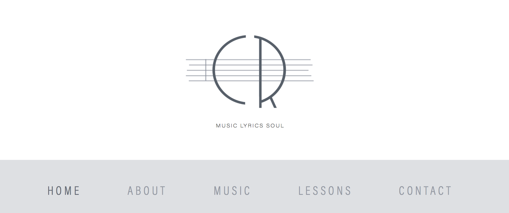
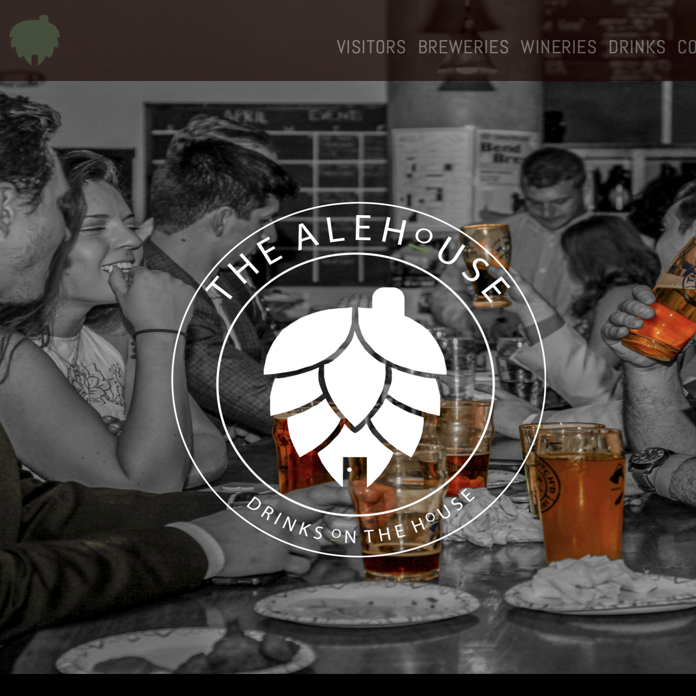

Website Designs
Music Lyrics Soul
Web and Graphic Design Project // 2020
Visual Branding
Content Management
System Communication
The client decided on a site displaying his music and offering music lessons. I designed the logo as well as worked with Squarespace's features on the design and layout of the website. Through the process I learned about Squarespace and how to work with a client to ensure that the site meets all the needs. Since my client is a pianist, I wanted the site to have a "Rhapsody in Blue" theme to it. I had the site's color scheme be blue, purple, and gray, and the logo resemble a retro 1960's blues typography with a note sheet behind his initials. This was a different project for me because I wasn't assigned it, there was no rubric to check if I did everything right. I enjoyed the creative freedom and learning about how to use Squarespace.
VisitMedia Production
Content Production
Web Developer
Website Content Planning
For the Summer of 2019, I studied abroad in Ireland. While in Galway, we partnered with Foróige, a nonprofit youth development organization to create a website on food waste. As part of the web team, I was to examine the social and cultural context of Galway and create a user friendly site that effectively and accurately displayed the information gathered. Using Wordpress, I was able to create a five page web site as well as work on the design and layout to make the site interactive. The project not only taught me the inner workings of Wordpress, it also taught me about child themes, user experience, and being able to make an effective product in a short amount of time.
VisitBeatha Galway: Food Waste
Interactive Storytelling & User Experience Project // 2019
Community and Media Based Project with Foroige on Food Waste

The AleHouse
Interactive Design Web Project // 2020
Front-End Web Development
Bootstrap
Original Visuals
This project was for my introduction to web design class in the School of Media Arts and Design. My task was to choose a website and redesign it as I saw fit. I chose the websites that gave information on the Breweries and Wineries in the Harrisonburg and Rockingham County area. Instead of choosing one website, I decided to choose multiple sites and make "The AleHouse", a one stop shop for users to find all the information they need on the topic of drinks. The images are my own as well as the design layout and logo. Through this project I learned about Bootstrap and the grid structure as well as Bootstrap’s other features, such as drop down menus, Jumbotron, contact form, and buttons.
Visit